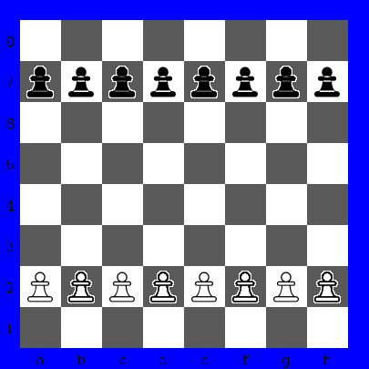
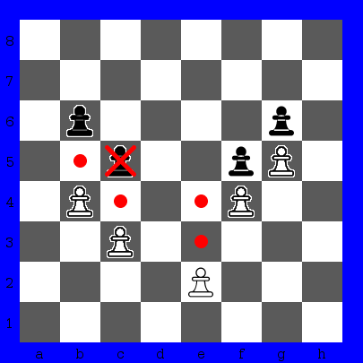

In pawn battle game, you can choose chessboard size at options in Select Game dialog window. Options are 4, 5, 6, 7, or 8 columns, for all options chessboard has 8 ranks. Each player receives 4, 5, 6, 7, or 8 pawns, according with number of columns in chessboard. White pawns starts at 2nd rank and black pawns starts at 7th rank.

Pawn battle start position with 8 columns.
Pawn can move only one square in front. If another piece is in front of pawn, this pawn can't move. In first move, pawn can move one or two squares in front. Pawn captures opponent piece at diagonal.

Pawn movement. Pawn at "e2" can move to "e3" or "e4", it
can move one or two squares in first move. Pawn at "c3" can move to
"c4". Pawn at "b4" can move to "b5" or capture black pawn in "c5".
Pawns at "f4" and "g5" can't move, since their route are blocked
by black pawns.
Player can win in three different ways: